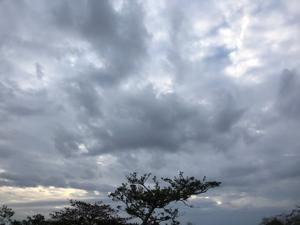
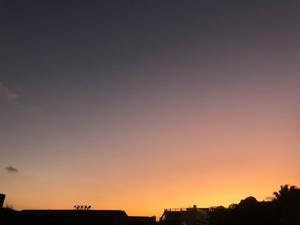
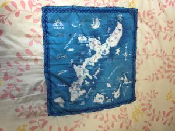

うるがいの話 ある日
最新: まつり縫い【うるがいの話 ある日】とは 一日だけのプログです
『うるがいの話』の最新一日だけのプログで、通信料が少なく経済的だ。カニの画像をクリックすると全ての日付が載る『うるがいの話』サイトを表示します
|
|
【うるがいの話】 うるがい(ｳﾙｶﾞｲ urugai)とは、『もずくがに』の名前でとても大きくなります。 |
|---|---|
|
|
【カミマヤーの話】 猫のことを方言でマヤーといいます。カミマヤー（kamimayaa）とは、神の猫のことです。 |
|
【たながぁの音楽】 たながぁ（ﾀﾅｶﾞｰ tanagaa）とは手長えびのことで、何種類かあり大きいのは車 エビぐらいになります。 |

|
【ぶながぁの話】 ぶながぁ(ﾌﾞﾅｶﾞｰ bunagaa)とは、赤い髪の毛、赤い身体、そして身長は１ｍ２０ｃｍ ぐらい、川の蟹を食べているの目撃された。場所は沖縄県国頭郡大宜味村のと ある村僕の隣近所に住んでいる爺さんから、聞いた話です。 |
|
|
【ギーマの話】 ギーマ(giima)とは、山原の里山に咲くスズランに似た、 花を付けます。実は食べられます、 気が付くと口の周りが紫になっています。 |
2023年01月07日 (土）まつり縫い
17:20
  
いい天気だった。敷布団をベランダに干し、日光消毒をする。そして、敷布団
カバーをする。布が擦り切れて壊れていたが、もったいないので、破れたとこ
ろにハンカチをあて、まつり縫いで修繕をした。足かけ、２カ月以上もかかっ
てしまった。仕掛は、２カ月ほど前、ニトリに適当な敷布団カバーが無かった
ので、ハンカチを軽く止め縫いした。ところが、楽譜ソフトの音色（サンドフ
ォンド）の改善に時間がかかり、去年の大みそかにやっと完成させる。縫いな
がら、無意味なことをしているのではと何度も思ったが、何とかやり終えた。
昨日の夜、録画した朝ドラをみて、『え、まさか！、亡くなるの』と思わずテ
レビの前で声をあげてしまった。妹が脳幹脳溢血で倒れたときや、コドモの熱
のためいった救急病院での、カーテン越しに聞こえた父親がタクシーの運転手
の娘が、亡くなった母親をみて父親を責めた怒鳴り声・・・・。
１７時１６分 ビットコインの総資産 ￥６、４９１（↓２７）